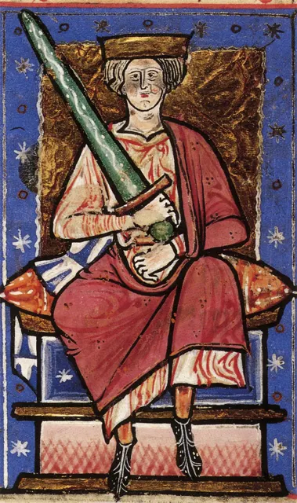

Æthelred the Unready
The king who was "badly advised" — paying the Vikings to go away, and then ordering a massacre.
England · Reigned 978–1013, 1014–1016 · Stop 9 of the odyssey
← Learning from the Past: An English Odyssey · ← Edward the Martyr · Sweyn Forkbeard →

- Is paying someone to go away ever a good solution?
- What happens when a leader listens to bad advice?
- What does "unready" mean to you?
The words for today's story
Each new word is hidden in a sentence. Read it aloud and say what you think the bold word means from the rest of the sentence — then reveal it and see how close you were.
Now use them — out loud
- Using any four of these words, predict: what kind of reign do you think this will be — and how might it end?
- Which words belong to power and which to danger? Sort them out loud and say why.


Credit: Unknown artist · via Wikimedia Commons, Public domain
The story, in three parts
Read each part. After it, there's a quick comprehension check (try the questions from memory first), then one thing to discuss.
Part 1 — A crown under a shadow
Æthelred became king in 978 at about twelve, after the murder of his half-brother Edward. Soon the Vikings returned. In 991, after a heavy English defeat at Maldon — remembered in a famous Old English poem — the king's advisers paid the Vikings 10,000 pounds of silver to leave.
The raiders came back, again and again, and each time the payment rose. By 1012 it had reached 48,000 pounds. The English learned a hard lesson: paying an attacker can invite him to return.
1. What happened after the Battle of Maldon in 991?
2. What was the problem with the payments?
1. England paid the Vikings 10,000 pounds of silver to leave.
2. The raiders kept coming back for more; the sums rose to 48,000 pounds.
- Why might paying tribute have seemed sensible at first?
Part 2 — St Brice's Day
In 1002 Æthelred ordered that "all the Danish men who were in England" be killed on St Brice's Day, 13 November, because he had been told they were plotting against him. We do not know how many died; it was probably not every Dane in England, but there was killing, including in Oxford, where Danes who had sheltered in a church were burned inside it. In 2008 archaeologists in Oxford found a mass grave that may be connected.
Later chroniclers claimed that the sister of the Danish king Sweyn Forkbeard was among the victims and that this provoked his revenge, but that claim is uncertain.
1. What did Æthelred order in 1002?
2. What is uncertain about the story?
1. The killing of Danish men in England on St Brice's Day, 13 November.
2. How many died, and whether Sweyn's sister was killed and drove his revenge.
- What does a leader's reaction to a rumoured plot tell us about him?
Part 3 — Exile and return
Viking attacks grew worse. In 1013 Sweyn Forkbeard conquered England, and Æthelred fled to Normandy, the home of his wife Emma. When Sweyn died in February 1014, the English nobles invited Æthelred back — on condition that he would rule more justly than before. It is the first recorded agreement of its kind between an English king and his people.
He returned, but fighting with Sweyn's son Cnut went on. Æthelred died in London in April 1016.
1. Where did Æthelred flee in 1013, and why there?
2. What condition did the nobles set for his return?
1. Normandy — the home of his wife Emma.
2. That he would rule better and more justly than before.
- Why is the 1014 agreement important for the history of kings and people?
Grammar — Third Conditional — What If?
History invites the great question: what if? The third conditional imagines a different past and its different result.
• Form: If + past perfect, would have + past participle.
• "If the wind had changed a day earlier, William would have landed first."
• Use might have / could have for less certainty.
1. Complete the conditional
Complete each sentence about Æthelred the Unready. Use the word in brackets.
1. If the English (not / pay), the Vikings (might / not / return) so often.
2. If Æthelred (listen) to better advisers, he (avoid) disaster.
3. If Sweyn (not / die) in 1014, Æthelred (not / come) back.
1. had not paid … might not have returned
2. had listened … might have avoided / would have avoided
3. had not died … would not have come
2. Mixed practice — what if?
1. If the nobles (trust) him, they (not / set) conditions.
2. If the massacre (not / happen), Sweyn (may / attack) anyway.
3. If Æthelred (become) king as an adult, things (could / be) different.
1. had trusted … would not have set
2. had not happened … may have attacked
3. had become … could have been
Hold on to this — you'll need it in the Speak tab.
Going deeper
Æthelred's reputation is terrible, but modern historians are kinder: he faced a far stronger Danish enemy than his ancestors, and the wealth of England — the very thing that made tribute possible — was a sign of a rich, well-run state. Still, his reign shows the danger of short-term fixes and panic decisions.
- Was Æthelred a bad king or an unlucky one?
- Is the 1014 agreement an early step towards limits on royal power?
- When is it wise to "pay to make a problem go away"?

Stop 9 on the journey → pie. In the Major System Palace, 9 is spelled with the sounds p, which make pie (a golden-crusted pie).
Picture a huge golden pie being handed to a Viking longship, which sails off — and comes back for another slice — stop 9.
You don't need the system to follow the story — it's simply a hook that lets you walk the whole odyssey, king by king, in order.
Speak
This is the heart of the lesson — do all of it out loud. The timer is there to keep you going: fill the time with detail rather than escaping it.
Tell the story of Æthelred the Unready in your own words, as if to someone who has never heard of them. Move through the arc: the boy king after a murder → Maldon and the rising Danegeld → the St Brice's Day massacre → exile in Normandy and the conditional return.
Use today's grammar at least three times, and work in at least five key words (unready, tribute, Danegeld, massacre, betray, flee, counsellor, restore, conditions, reprisal).
"Paying off an enemy is always a mistake." Argue for or against.
Tell a story from your own world — work, family, the news — that echoes this reign. Stuck for an idea? Pick one of these and run with it:
- A short-term fix that made things worse.
- A boss who listened to the wrong people.
- A panic decision.
- A second chance given with conditions.
To finish — the bigger questions
- Was "Unready" fair?
- What problem in your life are you "paying off" instead of solving?
- Before you go — from memory: give two sentences about Æthelred the Unready using Third Conditional — What If?, and say what lesson from this reign you could use this week.
← Learning from the Past: An English Odyssey · ← Edward the Martyr · Sweyn Forkbeard →